PICK UP A LITTLE STORY
Something for the road.
At a station shop, a convenience store or a vending machine, an unfamiliar label can be the start of a small discovery. These are names and flavours to get to know — for the train, a city walk or a quiet break.
Photos show examples from different years, including an overseas tea can. Packaging and stock vary. Follow the maker links for current products.
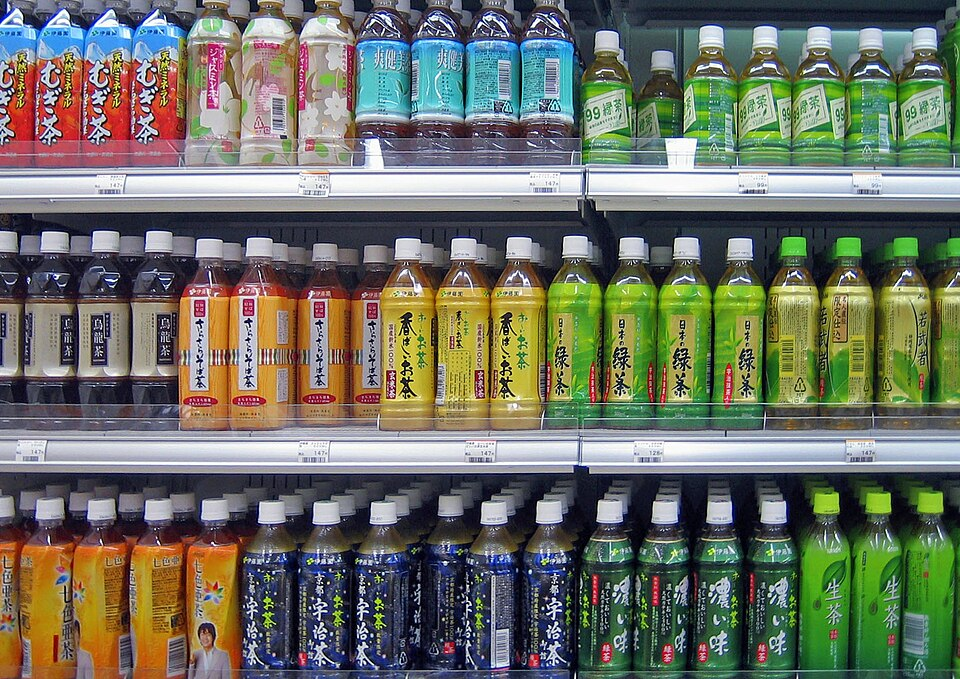
01 / お茶 / TEA
Start with the leaves.
Green, roasted, fragrant or earthy: “tea” on a Japanese shelf has more than one personality. First find the type, then explore the brand.
Green tea
Ryokucha. Fresh and leafy, with a little bitterness. A familiar companion for a bento or rice ball.
Roasted tea
Hōjicha. Roasting brings a toasty aroma. The amber colour does not make it a black tea.
Tea & roasted rice
Genmaicha. The aroma of toasted rice adds a different note to green tea.
Beyond green tea
- 烏龍茶 · Oolong
- Partly oxidised tea, often with a rounded or roasted character.
- ジャスミン茶 · Jasmine
- Tea scented with jasmine flowers. A floral option to look for.
- ルイボス · Rooibos
- A South African herbal infusion. Look at the ingredients if it is a blend.
- 麦茶 · Barley tea
- Mugicha. Roasted barley, not tea leaves; a familiar everyday choice.
Three names on the tea shelf
The large lettering is often the brand. The smaller words tell you which tea.
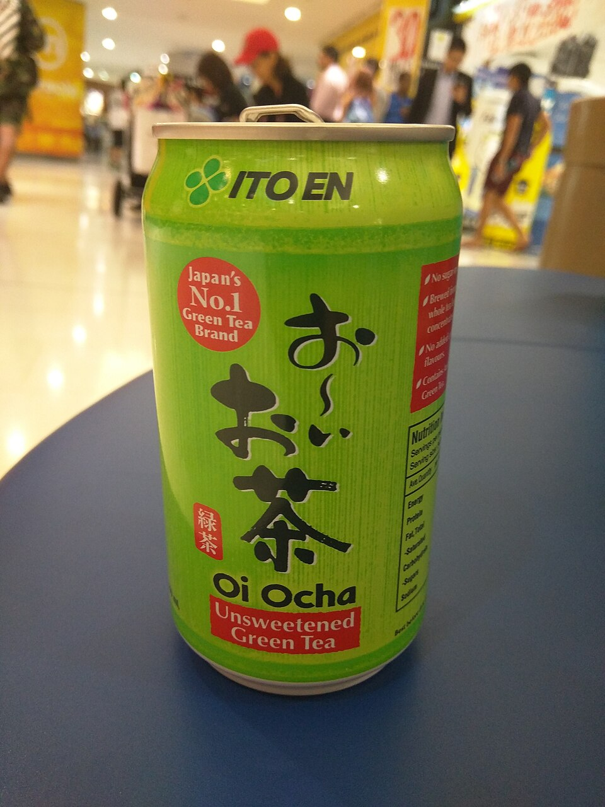
ITO EN · GREEN TEA & MORE
Oi Ocha
お〜いお茶
Learn these five characters and you will start spotting them everywhere. 緑茶 means green tea; the same family also includes roasted tea and tea with toasted rice.
- Ryokucha 緑茶 — a straightforward green tea.
- Hōjicha ほうじ茶 — a roasted aroma.
- Genmaicha 玄米茶 — tea with roasted rice.
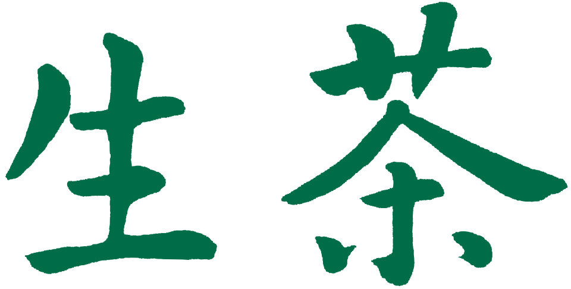
KIRIN · A NAME TO RECOGNISE
Namacha
生茶
The two large characters are the brand name. For the green tea, Kirin describes a fresh aroma and the gentle sweetness of tea leaves.
- Namacha — green tea, including fresh tea leaf extract in the current recipe.
- Hōji Sencha ほうじ煎茶 — the roasted member of the family.
The extra words matter: one brand can hold different kinds of tea.
Official range (Japanese) ↗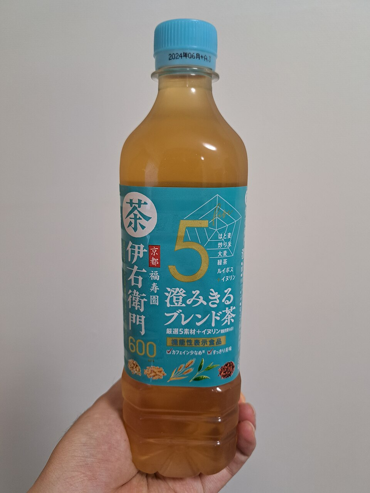
SUNTORY · A FAMILY OF TEAS
Iyemon
伊右衛門
Another name worth recognising on the tea shelf. Start with the green tea, then look at the smaller words: the range reaches into roasted teas and blends.
- Green tea — look for 緑茶.
- Blended tea — a useful reminder that the brand name alone does not tell you the ingredients.
The photo shows Sumikiru Blend-cha, a 2023 package, not the standard green tea.
Official range (Japanese) ↗02 / コーヒー / COFFEE
A small can. A lot to read.
Japan’s ready-to-drink coffee stretches from straight black to a sweet, milky break. Three different pieces of information help you find your way.
Milk or no milk?
ブラック · Black
Black means no milk. For no sugar as well, look for 無糖.
カフェオレ / ラテ
Café au lait and latte point you toward milk.
How sweet?
無糖 · Mutō
Unsweetened / sugar-free labelling.
微糖 · Bitō
Reduced sugar, not zero sugar. Sweeteners may also be used.
What kind of drink?
コーヒー / コーヒー飲料
Coffee / coffee beverage.
These are product categories related to coffee content. They are not a sweetness scale or a quality ranking. Some milky products have a milk-based category instead.
Label guide: Black (Japanese) ↗, Sugar labels (Japanese) ↗, Coffee categories (Japanese) ↗
Meet three coffee families
Choose the drink name, not only the maker’s logo.
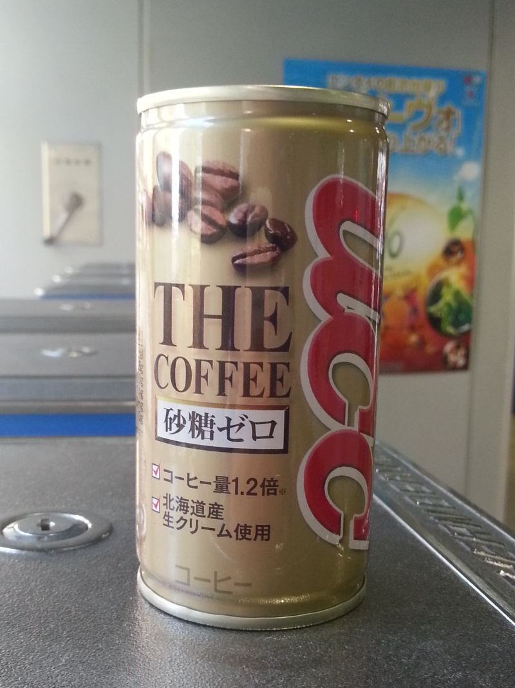
UCC · TWO VERY DIFFERENT STARTING POINTS
UCC
ユーシーシー
UCC is an easy place to see the breadth of Japan’s canned coffee: a sweet milk coffee and an unsweetened black can share the same maker.
- BLACK Unsweetened ブラック無糖 — coffee without sugar or milk.
- Milk Coffee ミルクコーヒー — a sweet, milky drink in the familiar brown-striped can.
Pictured: an older UCC “The Coffee” can, not either current product above.
Find the UCC name below Mt. Fuji ↓BLACK (Japanese) ↗ Milk Coffee (Japanese) ↗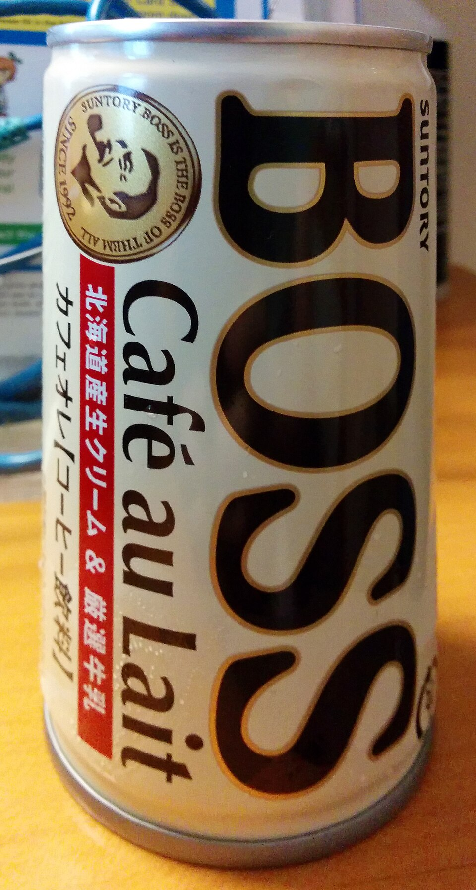
SUNTORY · MORE THAN ONE BOSS
BOSS
ボス
The pipe-smoking face marks a big family, not one flavour. The words beside BOSS help you choose.
- Unsweetened Black 無糖ブラック — no sugar or milk.
- Zeitaku Bitō 贅沢微糖 — milk and reduced sugar; still sweetened.
- Café au Lait カフェオレ — sweet and milky.
- CRAFT BOSS — look closely at the drink name on the larger bottles; the family also includes drinks beyond coffee.
ASAHI · LOOK FOR WONDA
WONDA
ワンダ
The Japanese name sounds like “Wanda”; the lettering on the can is WONDA. This is Asahi’s coffee family.
- Morning Shot モーニングショット — a milk-and-sugar coffee, marketed for the morning.
- Kin no Bitō 金の微糖 — a lower-sugar choice with milk.
- Black — check the full product name and 無糖 label for an unsweetened option.
03 / 清涼飲料水 / MORE DRINKS
Something familiar. Something new.
Move past the global cola names and there is plenty to explore: a blue sports drink, a milky-looking classic, mountain water and bottles full of bubbles.
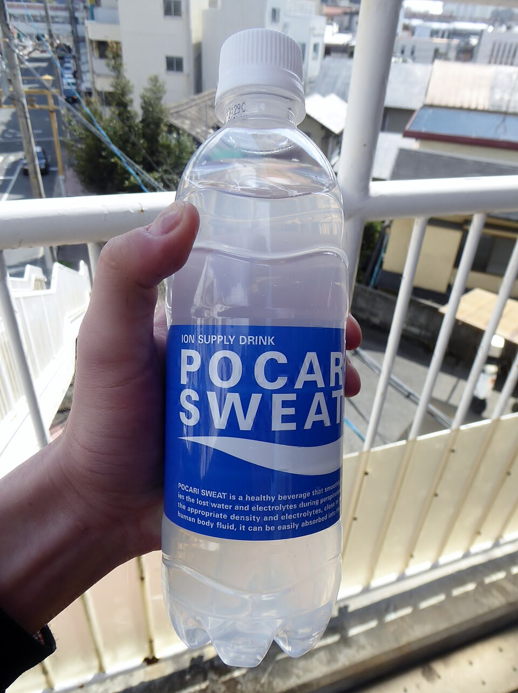
OTSUKA · SPORTS DRINK
Pocari Sweat
ポカリスエット
A sweet, lightly tangy electrolyte drink. The blue-and-white label is a familiar sight in Japan — and it appears on a building beside the Shinkansen too.
Look for: the big white POCARI SWEAT letters.
See the Fukuroi factory ↓Official range (Japanese) ↗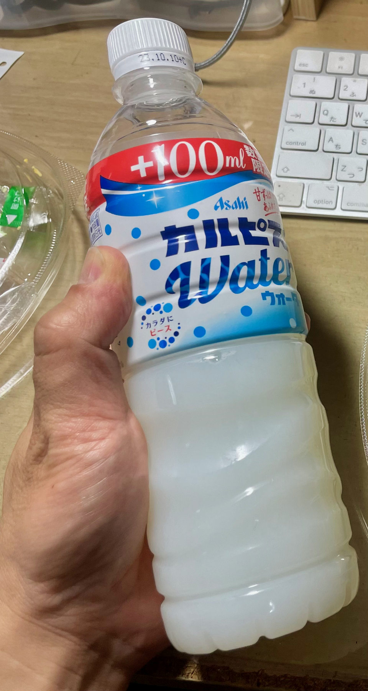
ASAHI · SWEET & TANGY
Calpis Water
カルピスウォーター
A milky-looking, sweet-and-tangy drink made with fermented milk. The word “Water” means this version is ready to drink — it is not plain water.
Water or Soda? Calpis Water is still; カルピスソーダ adds bubbles. It contains milk.
Official range (Japanese) ↗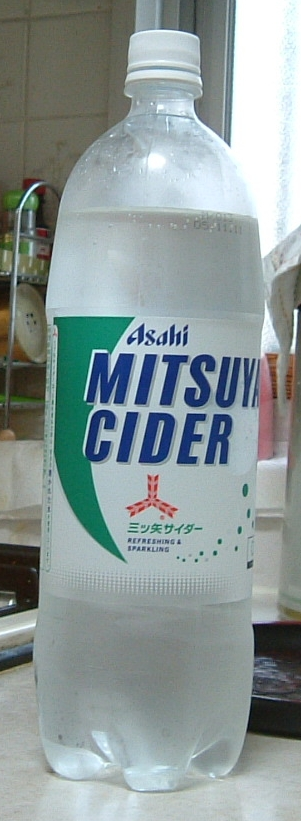
ASAHI · A JAPANESE SODA CLASSIC
Mitsuya Cider
三ツ矢サイダー
Here, “cider” is a sweet, non-alcoholic fizzy drink. The classic clear soda is a good name to know before exploring the brand’s changing fruit flavours.
Look for: 三ツ矢, “three arrows”. The original is a soda, not an alcoholic apple cider.
Official range (Japanese) ↗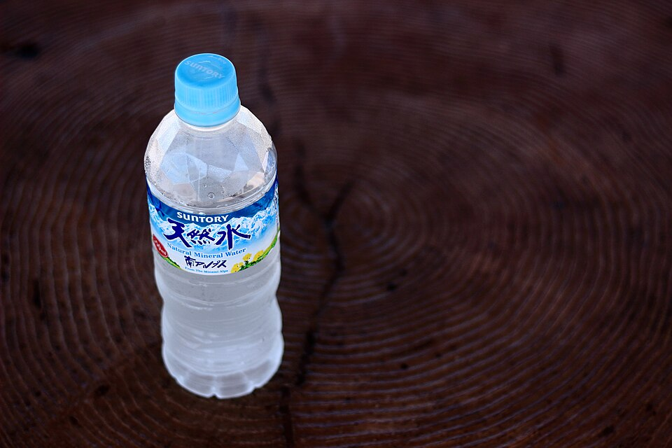
SUNTORY · A LITTLE GEOGRAPHY
Suntory Tennensui
サントリー天然水
For plain water, look for 天然水 — tennensui, natural water. Suntory’s four source areas are Minami Alps, Kita Alps, Oku-Daisen and Aso.
Read your bottle: the source name can change with where you buy it. One label can be a tiny geography lesson.
Explore the four sources (Japanese) ↗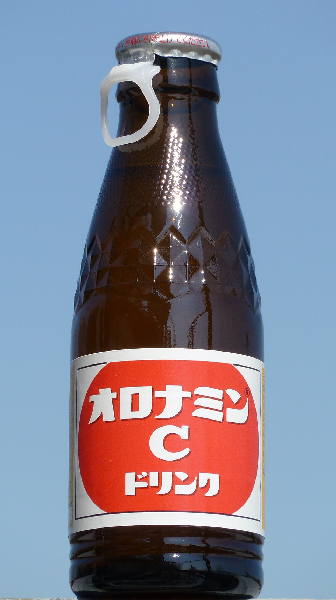
OTSUKA · SMALL BOTTLE, BIG FIZZ
Oronamin C
オロナミンC
A small brown bottle with a red label, a sweet citrus-like taste and carbonation. A longstanding Japanese vitamin drink, distinct from the larger energy-drink cans.
On the same shelf: energy drinks such as ZONe are another category to explore. Check the can’s caffeine information and serving size.
Oronamin C (Japanese) ↗ ZONe (Japanese) ↗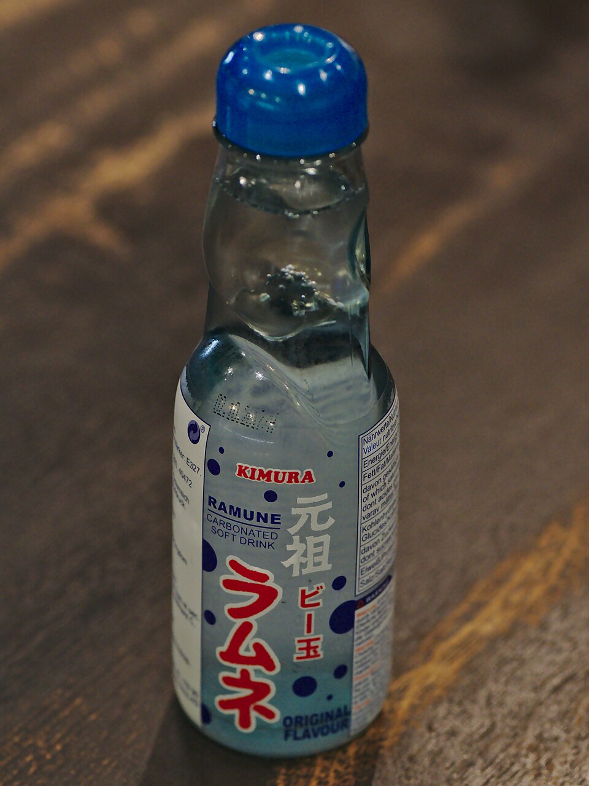
MANY LOCAL MAKERS · MARBLE BOTTLE
Ramune
ラムネ
The marble in the neck is part of the fun. This fizzy drink often turns up around festivals, sightseeing streets and souvenir shops.
A small ritual: follow the bottle’s instructions to push the marble down. It is a drink to open when you have a moment to stop.
A Japanese ramune maker ↗Photo credits & reading notes
This is an independent editorial guide. Brand names identify the drinks; no maker endorses this page. Photographs may show older or overseas packaging. The official links describe current ranges; stock varies by store and season.
Tea-field, UCC/Fuji and Pocari-factory photographs: michikusa, used with the photographer’s permission. Commons photographs and text logos are credited individually below. The linked licence applies to each image, not to the whole page. Trademark rights remain with their owners.
- Cold Tea Drinks (63202253).jpg — Paul Downey. CC BY 2.0. Displayed as a cropped shelf detail.
- Japanese Green Tea Can.jpg — Maksym Kozlenko. CC BY-SA 4.0. Displayed without cropping.
- Namacha logo (2020).svg — Kirin Beverage Company, Limited. Public domain (text logo; see source). Displayed without cropping.
- 伊右衛門 澄みきるブレンド茶.jpg — RuinDig/Yuki Uchida. CC BY 4.0. Displayed without cropping.
- Asahi Wonda.svg — アサヒ飲料株式会社. Public domain (text logo; see source). Displayed without cropping.
- UCC Coffee.jpg — Douglas Paul Perkins. CC BY 3.0. Displayed without cropping.
- Suntory Boss Cafe au Lait canned coffee.jpg — Fallschirmjäger. CC0. Displayed without cropping.
- POCARI SWEAT 500ml PET in Japan.jpg — Tokumeigakarinoaoshima. CC BY-SA 4.0. Displayed without cropping.
- Calpis Water plastic bottle.png — KKPCW（Kyu3）. CC BY-SA 4.0. Displayed without cropping.
- サントリー天然水.jpg — HiLens Image Works. CC0. Displayed without cropping.
- Mitsuya Cider Bottle.jpg — RadioActive~commonswiki (attribution on Commons). CC BY-SA 3.0. Displayed without cropping.
- Otsuka - Oronamin C Drink.jpg — Quercus acuta. CC0. Displayed without cropping.
- Ramune by Kimura Drink Co Ltd.jpg — Alexande rKlink. CC BY 4.0. Displayed without cropping.
Product and label references were checked on 3 October 2026. Maker links in each section are the starting point for ingredients, allergens and current packaging.